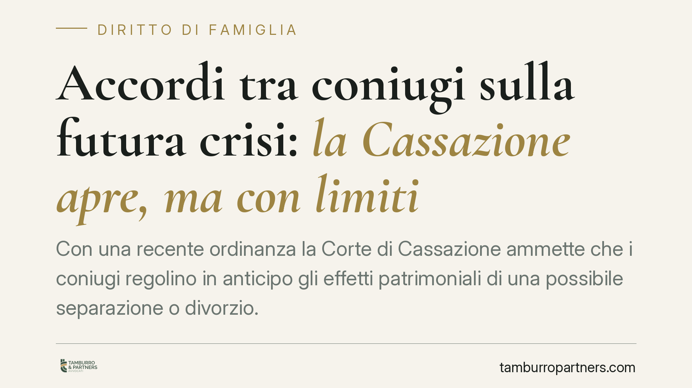

Accordi tra coniugi sulla futura crisi: la Cassazione apre, ma con limiti
Con una recente ordinanza la Corte di Cassazione ammette che i coniugi regolino in anticipo gli effetti patrimoniali di una possibile separazione o divorzio. Una svolta rispetto all'orientamento tradizionale, che considerava nulli tali patti. Restano però confini precisi: i diritti indisponibili e l'interesse dei minori non possono essere predeterminati per contratto.

Il fatto
La Corte di Cassazione, con l'ordinanza n. 20415 del 21 luglio 2025 (dato da verificare sulla banca dati ufficiale prima della pubblicazione), è tornata su un tema classico e controverso del diritto di famiglia: la validità degli accordi con cui i coniugi disciplinano in anticipo le conseguenze di una futura crisi del matrimonio.
La pronuncia riconosce a questi accordi un margine di legittimità sul piano patrimoniale, purché non tocchino diritti indisponibili né pregiudichino l'interesse dei figli. Un'apertura significativa, che va però letta insieme ai limiti che la Corte conferma.
L'orientamento tradizionale
Per decenni la giurisprudenza ha considerato nulli i patti stipulati "in vista" del divorzio. Il fondamento era l'art. 160 del Codice civile, secondo cui i coniugi non possono derogare ai diritti e ai doveri previsti dalla legge per effetto del matrimonio.
A ciò si aggiungeva l'orientamento costante sull'indisponibilità dell'assegno divorzile: un coniuge non può rinunciare in anticipo a un diritto che sorgerà solo con lo scioglimento del vincolo e che assolve una funzione anche assistenziale. Su queste basi, ogni accordo "preventivo" veniva travolto da nullità.
L'inquadramento aggiornato
La nuova lettura muove dall'art. 1322 c.c., che riconosce alle parti l'autonomia di concludere contratti anche atipici, purché diretti a realizzare interessi meritevoli di tutela. In quest'ottica, un accordo che organizza la sorte dei beni tra i coniugi può essere valido quando resta nel perimetro dei diritti disponibili.
Il confine è netto. È disponibile ciò che attiene al patrimonio: attribuzione di immobili, rimborso di somme apportate da un coniuge, ripartizione di beni acquistati insieme. Non è disponibile ciò che riguarda i diritti indisponibili della persona e, soprattutto, la posizione dei figli.
Su quest'ultimo punto resta fermo l'art. 337-ter c.c.: le decisioni su affidamento, collocazione e mantenimento dei minori sono governate dall'interesse del figlio e non possono essere cristallizzate in anticipo. Un accordo che pretendesse di predeterminare, ad esempio, presso quale genitore il bambino vivrà tra dieci anni sarebbe inefficace: quella valutazione spetta al giudice, alla luce della situazione concreta al momento della crisi.
Cosa cambia in concreto
Due esempi chiariscono la portata pratica.
Primo caso: un immobile cointestato. In assenza di accordo, in sede di separazione la sua sorte va negoziata o rimessa alla divisione giudiziale, con tempi e incertezze. Un patto preventivo valido può stabilire fin da subito, ad esempio, che l'immobile sia attribuito a un coniuge con conguaglio all'altro, evitando conflitti futuri sul bene.
Secondo caso: somme apportate da un coniuge per l'acquisto della casa familiare intestata all'altro. Senza accordo, il recupero di quelle somme passa spesso da contenziosi complessi sulla prova dell'apporto. Un patto scritto e datato può documentare l'importo e prevederne la restituzione in caso di crisi, riducendo l'alea del giudizio.
In entrambi i casi il vantaggio è la prevedibilità. Il limite è sempre lo stesso: nulla di ciò che riguarda i figli o i diritti indisponibili può essere blindato per contratto.
Cosa fare in concreto
- Distinguere con chiarezza, in ogni clausola, ciò che è patrimoniale e disponibile da ciò che non lo è.
- Documentare per iscritto gli apporti economici (somme, date, causali) fin dal momento in cui avvengono.
- Non inserire clausole che predeterminino affidamento, collocazione o mantenimento dei figli: sono destinate a restare inefficaci.
- Prevedere una revisione periodica dell'accordo, poiché la meritevolezza va valutata anche in base alla situazione al momento della crisi.
- Trattandosi di materia in evoluzione, è opportuna una redazione tecnica accurata, che tenga conto dei limiti di indisponibilità e dell'interesse dei minori.
Nota di prudenza
L'apertura della Cassazione non equivale a un via libera generalizzato. La validità di questi accordi si misura clausola per clausola. Un patto ben costruito può ridurre il contenzioso; un patto redatto senza attenzione ai limiti rischia la nullità parziale o totale, con l'effetto opposto a quello voluto.
Contributo informativo a cura di Tamburro & Partners - Avv. Giuseppe Tamburro. Non costituisce parere legale.
Ogni famiglia ha il suo equilibrio.
Separazione, divorzio, affidamento, assegno: se vuoi un confronto riservato su una specifica situazione, scrivi allo studio. Ti rispondiamo entro un giorno lavorativo.